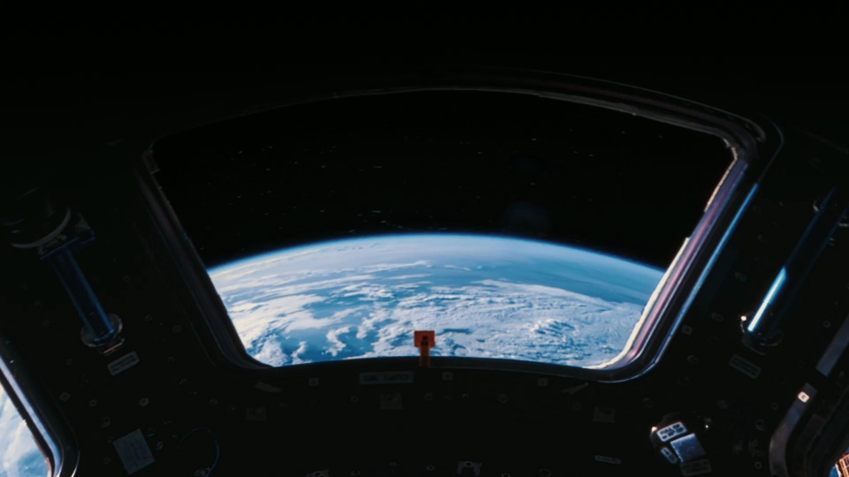
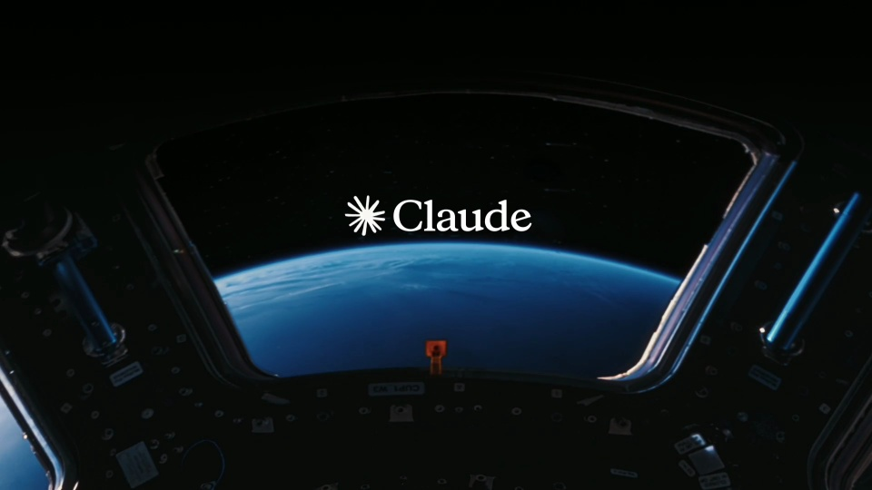
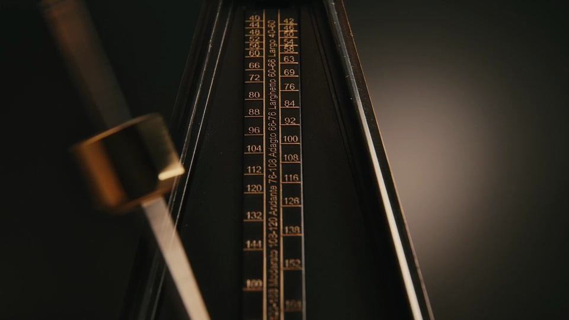
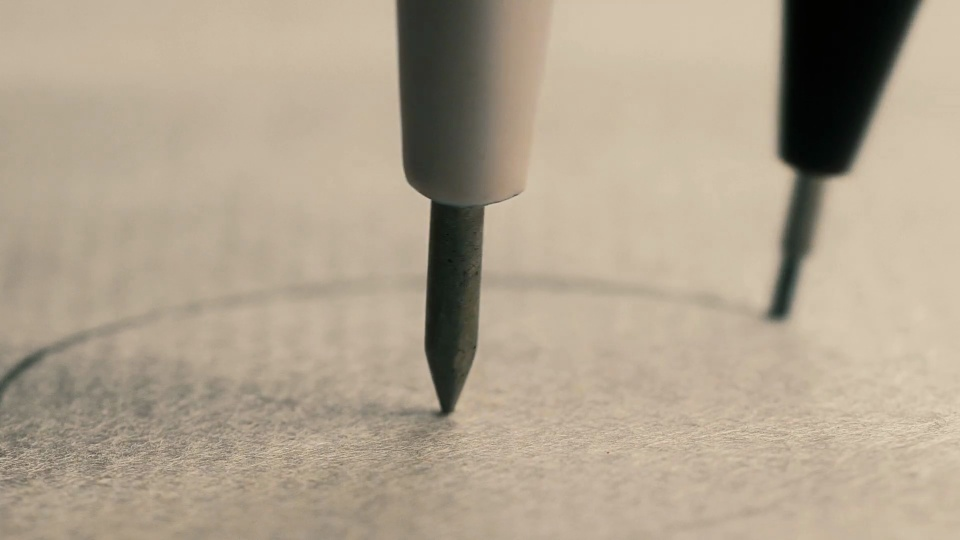
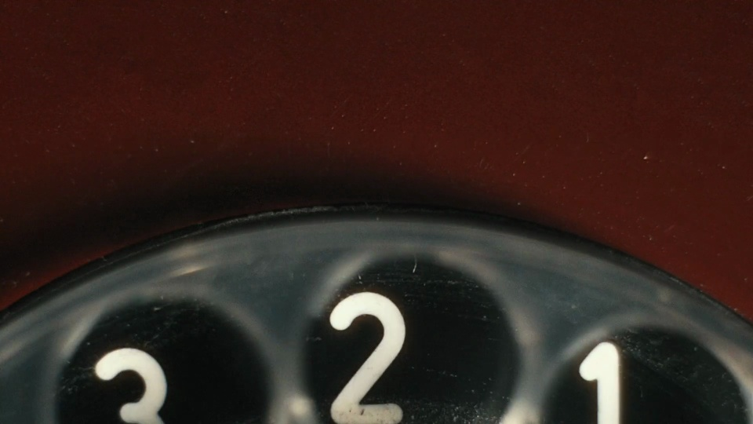

Anthropic / V006
Sonnet 5.5 · 微距剪辑
围绕弧线、刻度和周期运动挑选微距素材。短镜头连续切换，结尾回到舷窗，用较长停留承载产品名。
构图与编排 可播放 · 可替换内容
整体编排规则示例
查看 HTML 源码
<!doctype html><html lang="zh-CN"><meta charset="utf-8"><meta name="viewport" content="width=device-width,initial-scale=1"><title>Introducing Claude Sonnet 5.5, the second model in the Claude 5.5 family.
It’s a clear upgrade over Sonnet 5, runs more · sequence</title><style>html,body{margin:0;width:100%;height:100%;overflow:hidden;background:#101310}canvas{display:block;width:100%;height:100%;object-fit:contain}</style><body data-mode="sequence"><canvas width="1000" height="600"></canvas><script src="data.js"></script><script src="common.js"></script><script src="scene.js"></script><script src="bridge.js"></script></body></html>画面元素微距镜头组重复弧形／刻度画面运动方向产品标题舷窗首尾锚点
MOTION LANGUAGE
动作与构图
局部动作 · 构图规则
01
按形状选镜头

挑选弧线、刻度、圆形窗口与周期运动。让相邻镜头拥有可对接的几何形状，材质可以完全不同。
低照度实拍微距；金属、纸张与暖色仪表；少量居中衬线字。
02
短切推进，长停落版
短切推进，长停落版规则示例
查看 HTML 源码
<!doctype html><html lang="zh-CN"><meta charset="utf-8"><meta name="viewport" content="width=device-width,initial-scale=1"><title>Introducing Claude Sonnet 5.5, the second model in the Claude 5.5 family.
It’s a clear upgrade over Sonnet 5, runs more · sequence</title><style>html,body{margin:0;width:100%;height:100%;overflow:hidden;background:#101310}canvas{display:block;width:100%;height:100%;object-fit:contain}</style><body data-mode="clip" data-start="0" data-end="10.8"><canvas width="1000" height="600"></canvas><script src="data.js"></script><script src="common.js"></script><script src="scene.js"></script><script src="bridge.js"></script></body></html>通过弧线、圆环、指针等相似几何跨镜头匹配；它们是不同素材，不建立同一物体轨迹。
前中段短镜头密集切换，末段舷窗显著延长，给产品名阅读空间。
镜头动作由素材内部运动与取景共同形成，不能仅靠位置缩放重现光照和材质。
03
把产品名留给舷窗

可迁移的是形状匹配剪辑与短镜头→长落版的节奏。
换主题需要重新选择含相似弧形、刻度或周期动作的素材；不只替换最后标题。
SEQUENCE
段落与节奏
点击段落，定位到上方编排示意。



画面参考 · 离散静帧
KEEP THE RELATIONSHIPS
制作其他主题
- 可迁移的是形状匹配剪辑与短镜头→长落版的节奏。
- 换主题需要重新选择含相似弧形、刻度或周期动作的素材；不只替换最后标题。
制作约束
微距镜头组 / 重复弧形／刻度 / 画面运动方向 / 产品标题 / 舷窗首尾锚点
- 通过弧线、圆环、指针等相似几何跨镜头匹配；它们是不同素材，不建立同一物体轨迹。
- 前中段短镜头密集切换，末段舷窗显著延长，给产品名阅读空间。
- 镜头动作由素材内部运动与取景共同形成，不能仅靠位置缩放重现光照和材质。